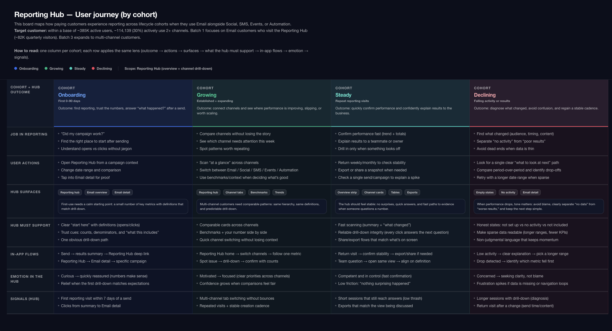
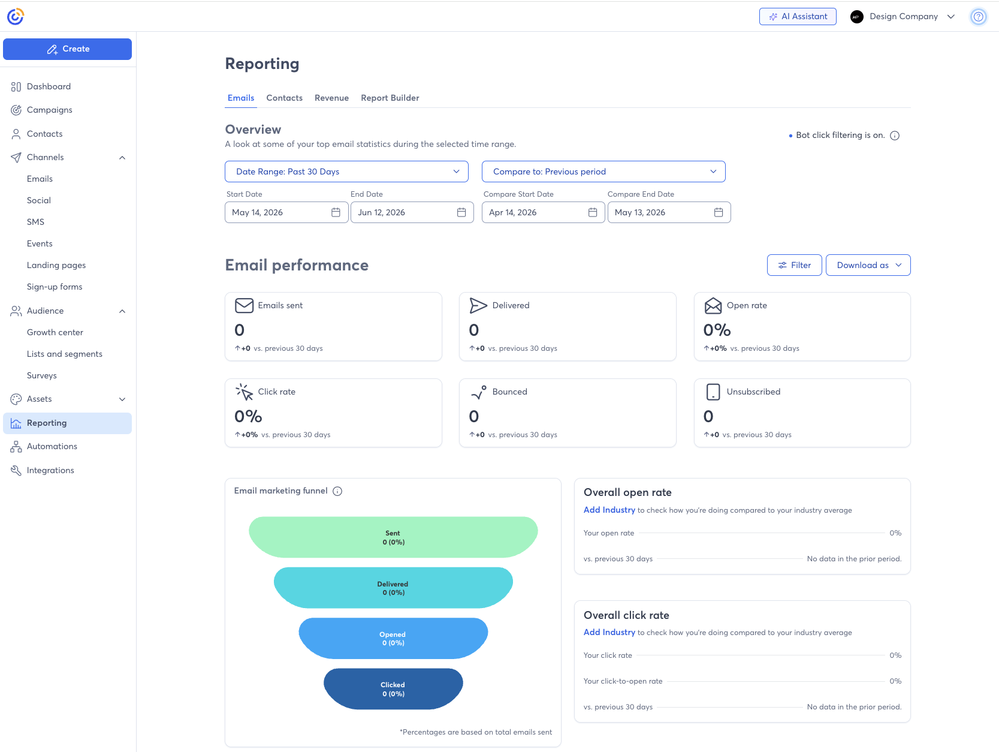
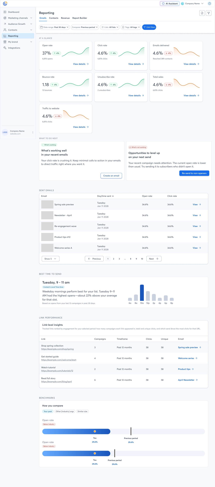
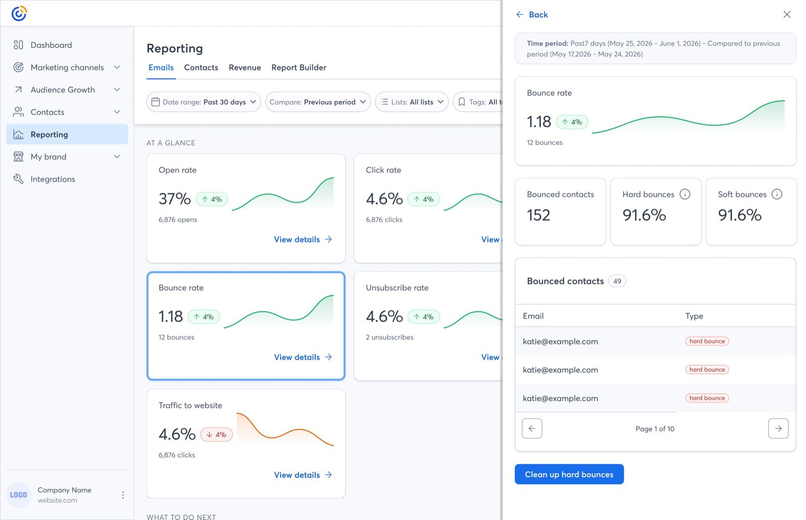
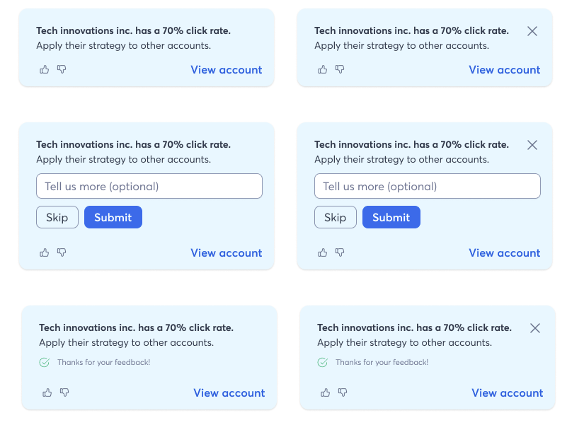

Overview
A company-wide bet on AI, and a focused design mandate
In 2026, Constant Contact made a company-wide investment in an AI Assistant to help small business owners get more out of their email marketing. The AI Assistant is a complex, cross-functional initiative — and one designer owns the core conversational experience.
My role is different, and equally critical. I am the key design partner responsible for how the AI Assistant shows up in the product's most decision-critical surfaces: reporting dashboards, customer happiness scores, campaign performance recommendations, and customer activation workflows.
This case study is about that work — designing the moments where AI moves from being a chat interface to being genuinely embedded in how users understand, trust, and act on their marketing data. It’s an active, evolving initiative, and this page reflects where the work stands today.
The Problem
Small business owners have data. They don’t have answers.
Constant Contact serves hundreds of thousands of small business owners — people running restaurants, boutiques, nonprofits, and freelance practices. They’re not data analysts. They log in to see how their last email did, feel uncertain about what the numbers mean, and often leave without taking any action.
The core tension: the product had rich performance data, but it wasn’t translating into clear next steps. Users were making marketing decisions based on anxiety and guesswork rather than insight.
Our research surfaced a consistent pattern: users knew their open rate went up or down, but they didn’t know why, and they didn’t know what to do about it. The reporting surface existed — it just wasn’t working hard enough.

Why AI
AI as a translation layer, not a party trick
The opportunity wasn’t to put a chatbot in the product. It was to use AI to do something genuinely hard: close the gap between raw data and plain-language understanding at the exact moment a user is looking at their campaign results.
For a small business owner with no marketing background, “Your open rate is 18.4%” is a number. “Your open rate is above average for restaurants — your subject line likely contributed” is an insight. AI made the second version achievable at scale.
“The goal was not to add AI features. The goal was to make marketing feel less like guesswork.”
Beyond reporting, AI opened a path to personalized guidance at scale — surfacing recommendations based on each user’s history, audience, and industry, rather than generic best-practice tooltips everyone ignores.
My Role
Design partner across reporting, happiness, guidance, and activation
I am not the sole designer on the AI Assistant. Another designer owns the core conversational AI experience. My mandate is to shape how AI shows up in the four product areas I own — and to make sure those surfaces are first-class citizens of the AI experience, not afterthoughts.
Product Context
A mature product with a new capability that didn’t fit old patterns
Constant Contact is not a startup. It’s a product used by hundreds of thousands of people who have expectations, habits, and workflows built over years. Introducing AI into a mature product is different from designing it green-field.
We had to answer questions that a startup doesn’t face: How do you introduce AI-generated content into a surface users already trust? What happens when the AI is wrong? How do you establish credibility with users who are skeptical of “AI hype” but are also not going to read a tooltip?
The existing reporting UI was dense, legacy, and engineering-constrained. That created real tension — we wanted AI insights to feel native, not bolted on.


Design Challenge
How do you make AI feel earned, not imposed?
The central design challenge wasn’t technical. It was about perception and trust. AI-generated content in a context where real money is on the line — marketing budgets, customer relationships, brand reputation — has to earn the right to be there.
We identified three tensions that shaped every design decision:
Key Workflows I Influenced
Where the AI actually touched users’ decisions
After a campaign sends, users land in a results view full of metrics. I’m designing an AI-generated “How did this campaign do?” summary card that renders at the top of the view in plain language — benchmarking against the user’s own history and industry averages, and surfacing one clear recommendation. The summary is dismissible, and users can expand for more detail.
I’m partnering with the customer success team to design an internal view that uses AI-derived signals to surface accounts showing early signs of churn risk — declining engagement, campaign abandonment, shrinking lists. The design challenge is helping CSMs prioritize without overwhelming them. I’m using severity tiers, plain-language risk summaries, and one-click escalation paths.
Drawing on AI analysis of past performance, audience behavior, and best-practice patterns, I’m designing a recommendation surface for the campaign creation flow and the product homepage. Recommendations are specific, ranked, and linked directly to the relevant action — not just generic tips. The component system is built to handle varying confidence levels and data availability states.
New users who import a contact list or connect a store often stall before sending their first campaign. I’m designing an AI-guided activation flow that personalizes the first-send experience based on what the system knows about them — their industry, list size, and any prior Constant Contact history — reducing the blank-page problem and increasing early engagement.

Trust & User Control
Designing for skepticism, not just delight
One thing I push hard for across all four workstreams: users should always feel in control of the AI. This isn’t just a product values stance — it’s a usability requirement. Small business owners are often skeptical of technology that “does things for them” without explanation.
I’ve established a set of design principles for AI-generated content that I apply consistently across my surfaces and advocate for across the broader AI Assistant initiative:
These principles aren’t just ethical guardrails. They’re what makes the AI surfaces feel trustworthy rather than gimmicky — which is ultimately what determines whether users engage with them at all.
Designing for Delegation
The real design challenge isn’t capability — it’s earned autonomy
Most AI product design conversations focus on what the AI can do. The harder question — and the one I keep returning to at Constant Contact — is how much of that the user should actually let it do. That’s not a technical question. It’s a design question.
The distinction I think about constantly is the difference between human-in-the-loop and human-out-of-the-loop systems. Human-in-the-loop means the AI proposes and the human decides. Human-out-of-the-loop means the AI acts and the human reviews after the fact, or not at all. Both are valid in the right context. The mistake is deploying one when users expect the other.
The spectrum isn’t binary — it’s a trust ladder
A user who has seen the AI get it right a dozen times is ready to delegate more than a user who just encountered it for the first time. The UI that serves both users the same way — always asking for approval, or never asking at all — is wrong for at least one of them. Designing for delegation means designing a system that can move users along that ladder, not one that freezes them at the first rung.
In practice, this plays out as a set of questions I ask about every AI action surface:
The goal isn’t to maximize AI autonomy. It’s to give users the confidence to delegate the right things — and the control to pull back when they need to. Autonomy, confidence, transparency, and control aren’t in tension; they’re the four variables that have to be in balance for the system to work.
Reporting & Plain-Language Insights
Making data speak in plain English
The reporting AI work is the most technically complex surface I own. Campaign reporting in Constant Contact surfaces a lot of data — open rates, click rates, bounces, unsubscribes, revenue attribution, list growth. Most users look at one or two numbers and leave.
I’m partnering closely with data science and engineering to design an insight layer that generates natural-language summaries of what a campaign’s results mean — not just what they are. This involves:

Outcome & Impact
Early signals, and how we’re measuring what matters
This work is actively rolling out, so the honest answer on impact is: it’s early. Because the AI features are embedded across a mature product used by hundreds of thousands of customers, we’re instrumenting carefully rather than declaring victory on launch metrics. The measures we’re tracking:
The early qualitative signal is encouraging: in concept testing and beta feedback, users describe the conversational analytics experience as “actually helpful” rather than gimmicky — and the recurring theme is feeling more confident about what to do next. For AI features in a mature product with a skeptical audience, that’s the signal that matters most at this stage.
I’ll update this section with quantitative results as the rollout matures and the data is real enough to stand behind.
Core design principles established: Explainability, progressive trust, contextual recommendations, user control, and AI-assisted decision making.
What’s Next
Where I want to take this work
Reflection & Key Learnings
What designing AI systems has actually taught me
AI adoption is a trust problem. Not a technology problem.
The question I hear most in AI product conversations is some version of “how do we get users to use it more?” The assumption baked into that question is that adoption is a discoverability problem, or a feature problem, or a marketing problem. In my experience, it’s almost always a trust problem. Users don’t avoid AI features because they don’t know they exist. They avoid them because they’ve been surprised before, or they don’t know what the AI will do, or they tried it once and it was wrong in a way that felt embarrassing. The design work that actually moves adoption isn’t adding more capabilities. It’s reducing the cost of being wrong and making it safe to try again.
The most valuable AI systems are not the smartest ones.
I’ve seen very capable AI fail to get traction because users couldn’t evaluate its outputs. And I’ve seen more modest AI become deeply embedded in how people work because they understood what it was doing and why. The intelligence of the underlying model matters far less to adoption than the legibility of the experience. A system that explains itself at the right level of detail, in the right moment, will outperform a technically superior system that doesn’t — because users will actually use it.
Users delegate work when they understand what the AI is doing and why.
Delegation is not the same as automation. Automation removes the human from the loop. Delegation is a conscious transfer of a task from a person to a system — and it requires that the person trusts the system enough to let go. What I’ve learned is that transparency is the mechanism that enables delegation. When a user can see the reasoning behind a recommendation, they can evaluate it. When they can evaluate it and it holds up, they build a mental model of when to trust it. That mental model is what eventually lets them skip the check. Hiding the reasoning to keep the interface clean short-circuits the whole process.
Trust compounds — but only through successful outcomes, not through promises.
Early in a user’s relationship with an AI feature, every interaction is an audition. They’re not evaluating the feature on its long-term potential; they’re evaluating whether this specific output was right, useful, and honest about its confidence. Get it right enough times and trust accumulates. Get it wrong in a surprising way — especially on something that cost the user something — and you’re starting over. This means the most important design decisions in an AI product aren’t about the happy path. They’re about what happens at the edges: low data, ambiguous inputs, uncertain outputs. A graceful uncertain state builds more trust than a confident wrong answer ever can.
The throughline across all of this: designing intelligent systems is fundamentally about designing relationships between people and software. The AI is the capability. The design is the relationship. And relationships — between people or between a person and a product — are built on consistency, honesty, and the accumulation of small kept promises. That framing has changed how I approach every AI surface I touch.